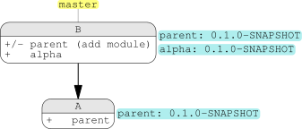
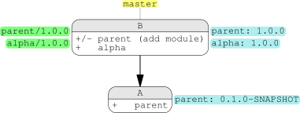
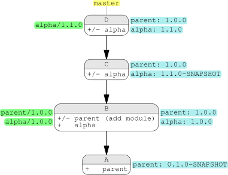
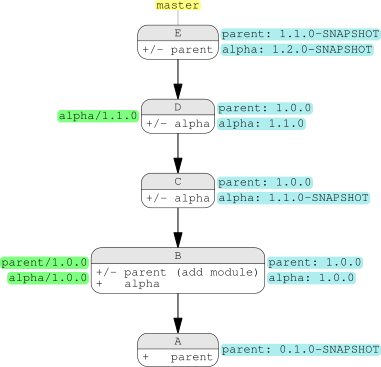
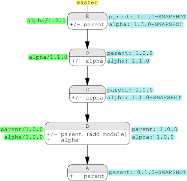
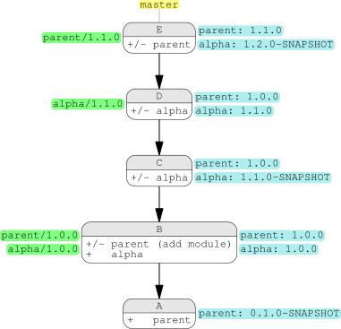
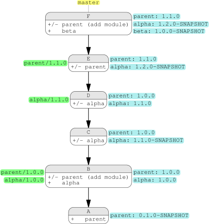
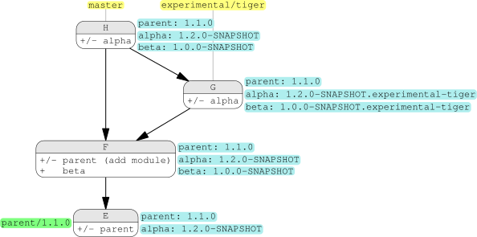
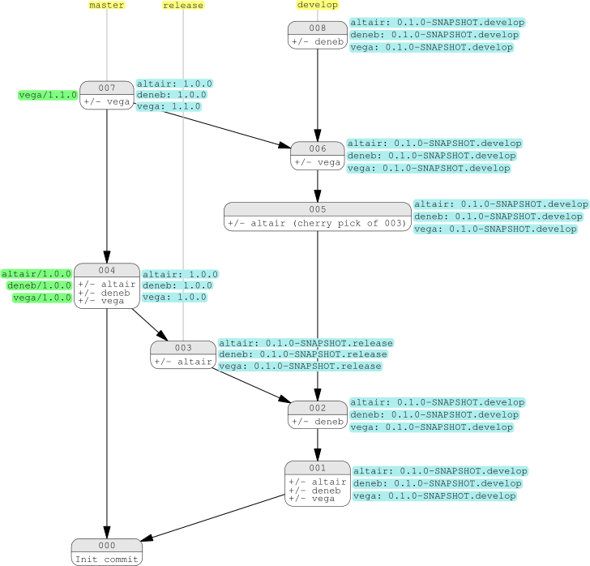
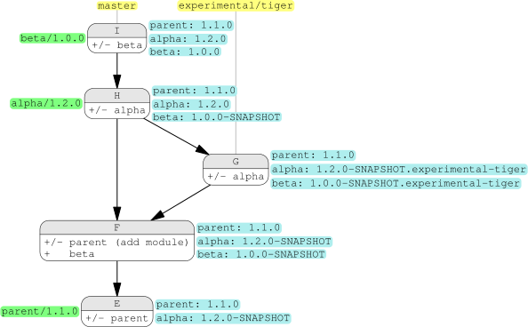

Tutorial
Let’s start a journey through the different situations encountered in a development process with Paprika.
Bootstrap
In an empty directory, we are setting up a basic multi-module project, one parent parent and one module alpha:
# create a parent pom
mvn -B archetype:generate \
-DarchetypeGroupId=org.codehaus.mojo.archetypes \
-DarchetypeArtifactId=pom-root \
-DarchetypeVersion=1.1 \
-DgroupId=com.hypatia \
-DartifactId=parent \
-Dversion='${paprika}'
# install Paprika
cd parent
mkdir .mvn
echo '<extensions xmlns="http://maven.apache.org/EXTENSIONS/1.0.0"
xmlns:xsi="http://www.w3.org/2001/XMLSchema-instance"
xsi:schemaLocation="http://maven.apache.org/EXTENSIONS/1.0.0 http://maven.apache.org/xsd/core-extensions-1.0.0.xsd">
<extension>
<groupId>io.github.atos-digital-id</groupId>
<artifactId>paprika-maven-plugin</artifactId>
<version>0.1.0-SNAPSHOT</version>
</extension>
</extensions>' >.mvn/extensions.xml
# create git repository and first commit
git init
git add .
git commit -m "[A] Create parent project"
# create alpha project
mvn -B archetype:generate \
-DarchetypeGroupId=org.apache.maven.archetypes \
-DarchetypeArtifactId=maven-archetype-quickstart \
-DarchetypeVersion=1.4 \
-DgroupId=com.hypatia \
-DartifactId=alpha \
-Dversion='${paprika}'
# commit alpha project
git add .
git commit -m "[B] Create alpha project"
During the creation of alpha project, Maven archetype automatically updates the pom.xml of parent by adding alpha as a module. The current project history can be represented like this:

We represent in theses schemas the computed version in blue for each module of the project and for each commit. In another words, the versions in blue are the computed versions of your modules if you checkout the specific commit. To check quickly what versions are provided by Paprika at your current commit, you can simply do:
mvn clean
First releases
We are so glad with our happy little projects that we want to release them. We just need to tag the last commit (with an annotated or a lightweight tag):
git tag -a -m "Release parent 1.0.0" "parent/1.0.0" HEAD git tag -a -m "Release alpha 1.0.0" "alpha/1.0.0" HEAD
The Git history and the computed versions become:

As you can guess, the tags are labeled in green in the schema. Nothing to modify in the pom files: you can check that Paprika has detected theses tags with another mvn clean.
Development process and another release
Let’s modify our alpha project:
sed -i 's/World/Everybody/' alpha/src/main/java/com/hypatia/App.java
Our working directory is now dirty, which means some modifications has not been committed. You can check that the computed version of the alpha project is now 1.1.0-SNAPSHOT with mvn clean. Paprika always checks if there are any modification in the working directory, or in the index, or in the commits since the last tag to determine if the module is pristine or modified. Since only alpha is modified, the version of parent is not updated and stay at 1.0.0.
We are continuing our development process, with some commits and another release of alpha project:
# Commit modifications git commit -am "[C] Include aliens" # Another commited modification sed -i 's/Everybody/Everybody and Smizmars/' alpha/src/main/java/com/hypatia/App.java git commit -am "[D] Include alien lovers" # Release alpha project git tag -a -m "Release alpha 1.1.0" "alpha/1.1.0" HEAD
Our Git history is now:

As you can see in the pom.xml file of alpha project, both alpha and parent versions are marked with the same placeholder ${paprika}, but Paprika will resolve theses versions independently and differently, depending the situation of each module.
Dependency checking
What happens if we modify the parent pom? (To run to following script, you need XMLStarlet)
# Add property in parent
xmlstarlet edit -L -N x="http://maven.apache.org/POM/4.0.0" \
-s '/x:project' -t elem -n properties pom.xml
xmlstarlet edit -L -N x="http://maven.apache.org/POM/4.0.0" \
-s '/x:project/x:properties' -t elem -n 'ladybug' -v 'Coccinella septempunctata' pom.xml
# Commit
git commit -am "[E] Adding bug"
As always, you can run mvn clean to see what are the current version of the modules.
Since parent is modified, it’s new version is now 1.1.0-SNAPSHOT. pom.xml files are somehow different from Java code: some modifications can be ignored by Paprika, like changing order of a list (properties, dependencies, …) or adding a module. But modifying a dependency, or adding or changing a property is not a trivial change, a lot of the building process can depend on that. So Paprika trigger an upgrade of the version.
More interesting, the alpha project is also modified and it’s version is now 1.2.0-SNAPSHOT. For each module, Paprika will also check the status of the dependencies of that module, and if any dependency is modified, the version is increased and snapshot-ed.
At this point, the Git history is:

Wrong usage
Let’s take advantage of this current situation to test something you should never do. When you release a module, this module can not have a not-yet-released dependency (still with a SNAPSHOT flag). That’s true in a multi-module project or in a single project, build with Maven, Gradle or any other building tool, in a project developed in Java or any other language, in the present, the past or the future, in this universe or another. So also with Paprika.
But, for science, let’s try to release alpha and not parent:
git tag -a -m "Release alpha 1.2.0" "alpha/1.2.0" HEAD
We obtain:

The current version of alpha is 1.3.0-SNAPSHOT, because the last version tagged of alpha is 1.2.0, but alpha depends on parent which is still in a modified state.
If one day, your tag is not taken in account by Paprika, but directly increased in a SNAPSHOT, that’s probably because you are experimenting this scenario, and your module is dependent of another modified module. In this situation, you can search which is faulty module by using mvn dependency:tree or mvn paprika:release.
Let’s fix this ludicrous situation by removing that alpha/1.2.0 tag:
git tag -d "alpha/1.2.0"
Independent releases
As explained in the last section, when we are releasing a module, the releasing of the modified dependency modules is mandatory. But we don’t have to release dependant modules every time we are releasing something. That’s a very simple but important concept. In fact, it’s the fundamental purpose of Paprika: allowing a different life cycle of release for each module. In our example, we can release parent without releasing alpha. Let’s try that.
git tag -a -m "Release parent 1.1.0" "parent/1.1.0" HEAD

Adding a module and configuring
Let’s make our project a little bit more complex: we are adding another module, beta, which depends on alpha:
# create beta project
mvn -B archetype:generate \
-DarchetypeGroupId=org.apache.maven.archetypes \
-DarchetypeArtifactId=maven-archetype-quickstart \
-DarchetypeVersion=1.4 \
-DgroupId=com.hypatia \
-DartifactId=beta \
-Dversion='${paprika}'
# add alpha as a dependency
xmlstarlet edit -L -N x="http://maven.apache.org/POM/4.0.0" -s '/x:project/x:dependencies' -t elem -n dependency beta/pom.xml
xmlstarlet edit -L -N x="http://maven.apache.org/POM/4.0.0" \
-s '/x:project/x:dependencies/x:dependency[last()]' -t elem -n groupId -v com.hypatia \
-s '/x:project/x:dependencies/x:dependency[last()]' -t elem -n artifactId -v alpha \
-s '/x:project/x:dependencies/x:dependency[last()]' -t elem -n version -v '${paprika}' beta/pom.xml
# commit beta project
git add .
git commit -m "[F] Create beta project"
Which give this history:
Like in alpha/pom.xml, every versions of our multi-module project are marked with ${paprika}, but each time Paprika will resolve these versions differently. The parent version is not modified, since adding a module doesn’t count like a modification.
But, after reflexion, we don’t want to hurt beta feelings and we decide to have a base version at 1.0.0 and not 0.1.0 anymore. So, we need to add a configuration file. But if we create a configuration file for parent (so at ./.mvn/paprika.properties), that will modify parent and so alpha (since alpha depends on parent). That’s not specially an issue: in that situation, with all module marked as modified, we can always choose to release beta (and so parent) without releasing alpha. But we need to take a decision, and since there is no planing of adding another module after beta, we decide to minimize modifications and configure only beta project, by amending the previous commit:
# create configuration file mkdir -p beta/.mvn echo "initVersion=1.0.0" >> beta/.mvn/paprika.properties # amend last commit git add . git commit --amend --no-edit

Branches
Let’s working properly for once, and create a branch for a new experimental feature.
# Create a branch, modify alpha and commit git checkout -b "experimental/tiger" sed -i 's/\[\]/ .../' alpha/src/main/java/com/hypatia/App.java git commit -am "[G] New Java 5 syntax" # Merge the branch in master git checkout master git merge --no-ff -m "[H] Merging experimental/tiger" "experimental/tiger"
Now, the history is (the complete history becomes long, so we display only the last commits):

We are only illustrating here that master is an exception and the pre-release tag SNAPSHOT may be followed by the name of the branch, respecting the Semantic Versioning convention and the Maven requirements. The branches that should not be added as a pre-release tag can be configured, and the feature can be disabled completely by adding nonQualifierBranches=** in the configuration file.
Why and how using branches? GitLab wrote a great article about the subject, and explains different strategies. It appears that Paprika is not designed for all flows, especially those with a development branch and a separated release branch (like git flow with a develop and a master branches, or GitLab flow with different environment branches). Let’s take a simplified scenario of git flow to see what the problem is:

By using Paprika, and if no correction are needed during a release process, some commits can be empty, and skipped. That’s a scenario we choose to display by omitting a commit in the release branch between 006 and 007. But above all, since commits 004 and 007 are not in history of any commits of the develop, the computed versions by Paprika stay at the default version in the develop branch. Up to you to decide if it’s an issue or not, depending your habits and integration and deployment workflows, but clearly Paprika is more adapted to simpler GitHub flow or Atlassian flow, which are used in this tutorial.
The release goal
How to know which module can be released or which module should be release? In this tutorial, the situation were simple and easily manageable. But in the real world, doing that by hand means we need to keep track of the dependency and the feature implemented to retrieve which module that should be released, an activity which can be a little cumbersome. But the release goal is here to help.
If you launch the command mvn paprika:release, you should see the Git commands you can apply to release all modified modules. In our current situation, we should see in the Maven output something like:
[INFO] [INFO] Git commands: [INFO] git tag -a -m "Release alpha 1.2.0" "alpha/1.2.0" 90eff572b [INFO] git tag -a -m "Release beta 1.1.0" "beta/1.1.0" 90eff572b [INFO]
Of course the final commit id can be different if you have reproduced yourself this tutorial.
alpha and beta are listed here because they are modified, and also because they are modules of parent: the release goal search if the current project (here parent) and any sub-modules need to be release. It can be useful in some cases to discard these sub-modules, which can be achieve with mvn paprika:release -DreleaseModules=false. In our case, since parent doesn’t need to be released, the command displays:
[INFO] [INFO] Nothing to release [INFO]
Also the command can be used with the option --pl, to focus about the release of a precise module (with or without its sub-modules). For example, mvn paprika:release --pl alpha will ignore beta and display:
[INFO] [INFO] Git commands: [INFO] git tag -a -m "Release alpha 1.2.0" "alpha/1.2.0" 90eff572b [INFO]
The goal can also execute the displayed command by adding the option -Dexec=true. We let you judge the dangerousness of this convenient option, and imagine what can happens if you blindly run it without check what will be tagged.
Finally, the proposed commands will always seek what are the last commits modifying each module, and so the tags can be applied on different commits. To demonstrate that, let’s create a modification on beta (without branching this time):
# Modify beta sed -i 's/Hello/Good bye/' beta/src/main/java/com/hypatia/App.java git commit -am "[I] That's all folks\!" # I am the danger mvn paprika:release -Dexec=true

As you can see, Paprika has tag the commit H for alpha but I for beta. If you don’t want these feature and only get commands tagging HEAD, just add the property release.lastModification=false in the configuration file.
Conclusion
We hope that this tutorial has been as pleasant to read as it was to write. Some topics haven’t been covered, like how to release a hot fix or why Paprika is generating a reproducible build, but we hope this will give you a good overview of how Paprika works and ultimately how transparent it is in your day-to-day work.